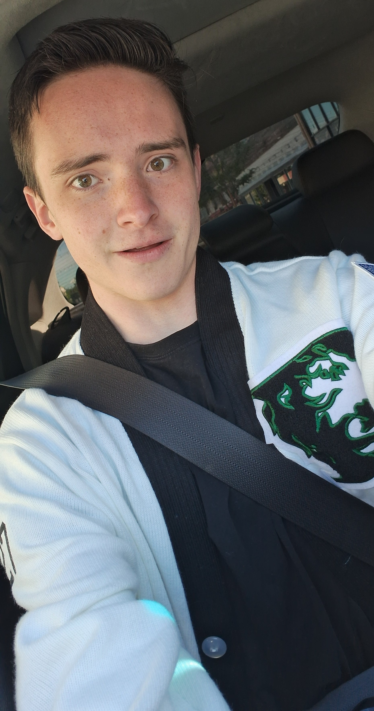
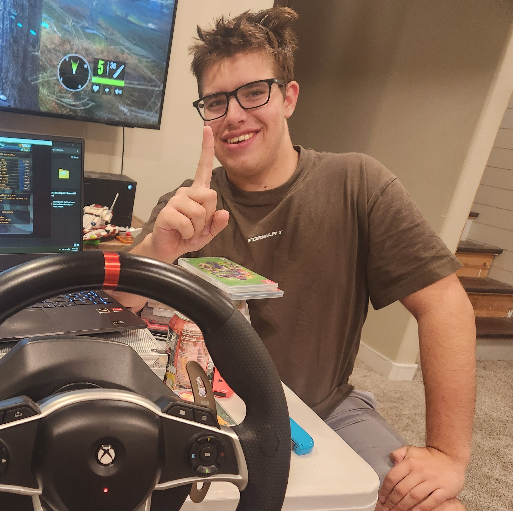
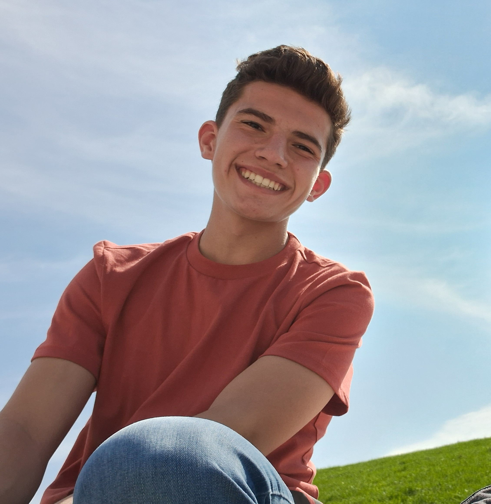

About The Organizers / Contact Us
Sam Turner

Sam Turner is the creator and organizer of the NASCAR Rocky Mountain Regional Series. He is a full-time driver in the series, racing with his sim. He's always been passionate about racing. Sam also plays tennis, plays the organ, is a former cadet for the Civil Air Patrol, and is on his school's student council.
Mathis Boone
Mathis Boone is a part-time driver in the series, having become involved in the organization late in the inagural season. racing with his joystick. Mathis is an expert in CAD and is currently helping build physical components for other friends to use sim racing rigs. Mathis enjoys playing hockey and tennis.
Gage Thiel

Gage Thiel is a full-time driver in the series, having 1 win by his AI car. While most of his races are run by his AI car, Gage has a full sim with a wheel and pedals and has practiced relentlessly. Gage is a skilled sim racer in F1 games. Gage also enjoys playing many sports, including lacrosse, football, basketball, and baseball. Gage also plays the violin.
Ty Nichols

Ty Nichols is a full-time driver in the series, having 1 win by his AI car as well. While all of his races are run by his AI car, Ty has helped Sam Turner create paint schemes and content for the series and has played a major role in bringing the series to life. Ty also enjoys playing volleyball and soccer, and enjoys playing games on his old Nintendo.
Caeden Cataldo

Caeden Cataldo is a test-driver for the series, aiding Sam Turner in troubleshooting and debugging multiplayer issues by driving in exhibition races. Caeden has experience on Sam Turner's sim and his best track is Kansas. Outside of NASCAR, Caeden is skilled in robotics and aerospace education, having served as a cadet in the Civil Air Patrol. Cataldo is also a former tennis player.
If you have questions or need to reach the organizers, use the form below.